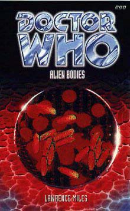

|
Alien Bodies
|
BASIC PLOT DOCTOR We see at least one future incarnation of the Doctor, but it's not clear which one. (NB - it's possible that it's an older version of the Eighth, which makes more sense now, given the new series. It probably wasn't intended to be, however.) COMPANIONS Sarah Jane Smith makes a cameo appearance at the beginning. MATERIALISATION CIRCUIT Pg 2 Around the life-support capsule of Sputnik Two, which itself appears in the Console Room. Pg 3 On Quiescia. Pg 11 We don't see it, but the TARDIS has materialised, it would appear, hovering on its side some distance below the forty-sixth floor of UNISYS HQ in Geneva, either in 2063 or 2069 (see Continuity Cock-Ups). Pg 37 East Indies ReVit Zone, same time period. Pg 286 A future Doctor materialises on Mictlan on the eve of the war. Pg 311 The Eighth Doctor arrives on Quiescia, some 275,000 years after the third did. PREPARATORY READING CONTINUITY REFERENCES Pgs 7-8 "Kortez had been in UNISYC for over thirty years, according to his ident sheet; he'd been part of the ISC division during the Cyberbreaches in the '30s, he'd been at Saskatoon when the Republicans had issued their ultimatum against Canada. If the rumours at UNISYC Central were true, he'd also been shot at by prehistoric lemur-people and survived an assassination attempt by an android assassin posing as the Norwegian Minister for Health." The ISC is short for International Space Command, who ran both Snowcap Tracking Station in The Tenth Planet and the moonbase in, er, The Moonbase (as well as, it would appear, Nerva Beacon in Revenge of the Cybermen). The Cyberbreaches presumably include The Wheel in Space amongst other, unrecorded adventures. Saskatoon is relevant later in the book, although it's not clear whether this mention is connected to the later ones. The prehistoric lemur-people are, sadly, unrecorded, whilst an android assassination attempt involving a minister of state, while not ever seen as such, sounds very like something which happened in The Dimension Riders. Pg 8 "Kathleen Bregman had been part of UNISYC for nine of her twenty-seven years, and - with the exception of the pickled exhibits in the Little Green Museum - had never seen an extraterrestrial." It's possible that this museum is what eventually happened to van Statten's museum after Dalek. It might also relate to the Vault from The Scales of Injustice. "What for you go into great dark-heart forest?" This is a (presumably unintentional, but you never can tell) reference to The Dark Path, which also featured a relic of an ancient time-sensitive civilisation, to whit: the Dark Heart. Pg 9 "No sunshine here, thought Bregman, not these days. Still damn hot, though." The implication is that the revitalisation of Borneo is being done by climate control, as seen in The Moonbase and The Seeds of Death. It's not clear why there's no sun, however. Pg 11 "'Remind me,' he finally said. 'How does the horsey thing move?'" The Eighth Doctor appears to be unable to remember how to play chess, something that the NA Seventh Doctor was, it turns out, rather good at. Given the way he plays the general immediately after this, it's very likely that he's bluffing here. "The queen can make bargains with the Higher Powers of Creation to move around corners." This would appear to be another reference to the Seventh Doctor of the NAs, who had a tendency to do that sort of thing. Pg 12 "The first time we met. Saskatoon, 2054. When you were still wearing that other body of yours, the little baggy one. You remember?" An unrecorded adventure with, presumably, the Seventh (although possibly the Second) Doctor. "They were using thermosystronic weapons they'd bought from the Selachians." Selachians appear in The Murder Game and The Final Sanction. See also Continuity Cock-Ups. Pg 14 "The city had been built to impress his clients, put together in a day or so with an old block transfer modulator and some sticky-backed matter augmenters." Block Transfer Computation is the lynchpin of the story of Logopolis. The 'sticky-back' reference is to the UK TV programme Blue Peter, which used to show children how to create facsimiles of Doctor Who monsters using cardboard, a couple of toilet rolls and "sticky-backed plastic", otherwise known as sticky-tape, except that that's a brand name and the BBC's charter forbade any form of advertising on TV. It confused a whole generation. "The same way the Seven Hundred Wonders of the Galaxy were supposed to be "great"." This is, presumably, a reference to the Seven Hundred Wonders of the Universe from Death to the Daleks. Not quite clear on why the change of name. Pg 15 "At first, he'd considered using robotic surveillance devices, birds with security cameras in their heads, cybernetic animals with glowing red eyes, that kind of thing. But it had all seemed a bit passe, really." This would appear to be a not-particularly-subtle dig at Ghost Light. Pg 16 "Say what you like, about knowing Napoleon or meeting Haig or watching at Agincourt. Tell me your fairy stories. It makes no difference. You don't understand. You never have. You never will." The Doctor didn't meet Napoleon in either of his appearances - The Reign of Terror and The Sands of Time - but claims to have done so in Day of the Daleks. Haig remains unrecorded; Agincourt may be a reference to Managra. Pg 17 "Yes. Serious-looking man, very square jaw. Talked about Zen Buddhism a lot. Rather confused, I thought. Still, maybe he wasn't what he seemed." The description of Kortez as very into Zen Buddhism may have resonances with the UNIT Broadsword units of No Future, but may well have absolutely nothing to do with them whatsoever. "The United Nations. The World Zones Authority. The ones who've spent the last three hundred years cleaning up your litter." The World Zones Authority comes from The Enemy of the World. The date of three hundred years seems somewhat arbitrary, given that the Doctor's interference in the history of Earth dates back considerably earlier than that. However, if one decides to round down a little, you can date it to 1799, the date of Christmas on a Rational Planet, which is when the Brotherhood first heard of and reacted to the Doctor. Possibly a coincidence that the Brotherhood and Earth governmental agencies first heard of the Doctor at around the same time, and possibly not. That said, neither the UN nor the WZA were in existence in 1799, so the whole thing's a bit of a generalisation. "That's why the CIA didn't put a bullet through your throat in the 1970s." In their defence though, they did try and kill him by blowing up his lab in The Devil Goblins from Neptune. Pg 19 "We're scheduled to play again on July 16th next year." If the chess rematch happens, we have yet to see it occur. Pg 20 "Homunculette still hadn't changed out of the black business suit he'd been wearing when he arrived." Homunculette's wardrobe is consistent with the sartorial choices other Time Lords have made when visiting Earth, particularly the one who came to warn the Doctor of the Master's impending arrival in Terror of the Autons. Pg 22 "And the Cybermen aren't going to be coming back to Earth for another year or so, I checked." Presumably, Qixotl's referring to the events of The Moonbase, which is 2070, suggesting 2069 for the date of this book. "This is where it all started, then. Where the first of the invaders dropped out of the sky, where the local politicians were herded together and incinerated. "Exterminated", I should say. Right there, across the river in Parliament Square. The sky's grey over London, full of pus, full of old pollution." This is London two years after the Daleks firebombed the city during The Dalek Invasion of Earth, hence the pollution. We'll see it next, in another 8 years, in Legacy of the Daleks. "All I know about the English weather is this: it plays hell with my monitors." This is Marie, the Type 103 TARDIS talking, but one can compare Episode 7 of The Daleks' Master Plan, in which, landing in smog-filled Liverpool, the Doctor complains that the scanner isn't functioning. Pgs 25-26 "During the invasion, the humans had dumped a lot of their dead down here." In the River Thames, hence the 'It is forbidden to dump bodies' sign in The Dalek Invasion of Earth. Pg 27 "The invaders came here, in their little toy saucers." Not an entirely unfair description of the special effects in The Dalek Invasion of Earth. Pg 28 "Homunculette imagined them killing off the local politicians, issuing commands in their stupid tin voices." That'll be the Daleks, then. Pg 30 "Got things the Cybermen left behind, back in the 2030s. Got real Ice Warrior relics, from before they dropped the rock." The Wheel in Space. The rock, presumably, refers to the human attack on Mars as detailed in Transit. Pgs 31-32 "The card was covered in scratches and swirls, which seemed to reorganise themselves as he watched, forming words in High Gallifreyan." Old High Gallifreyan was a language (apparently connected to Ancient Greek) which appeared in The Five Doctors. This is presumably the modern equivalent. Pg 32 "Homunculette gave her his best scowl. 'Open up,' he said." This is how the Doctor opened the spaceship beneath the water in Battlefield. Pg 33 "Like all Type 103 TARDIS units, on the outside Marie resembled an inhabitant of whatever environment she happened to land in." This is the first time we get told that Marie is a TARDIS. It'll be explained how we got to organic TARDISes in The Shadows of Avalon. Type 103 is consistent numbering with the Type 102 we get in The Dimension Riders, but causes no end of problems when we get to Shadows. See Continuity Cock-Ups for The Dimension Riders for more details. Pg 36 "The graphics [on the TARDIS screen] had been bright and blocky, the kind you used to get on those crap old microcomputers they had in schools back in the '80s." This is consistent with the computer output of the TARDIS in The Five Doctors, but not really with that of the Telemovie. The fact that this screen is 'new', implies that the Doctor's pulled it out of storage from the old console and it is, in fact, the selfsame one from The Five Doctors. "'Internal gravity compensators,' he'd beamed." Much the same as we saw in Time-Flight. Pg 42 "The Cybermen had been on the first page, unsurprisingly, but the book had gone on to describe such obscure and exciting species as the Martians, the Selachians, the Krynoids, the Hurgalnooks, the Bandersnatchers, and the Rock-Eating Yellow-Bellies." The Tenth Planet et al, but you knew that; The Ice Warriors et al, but you knew that; The Murder Game and The Final Sanction (but see Continuity Cock-Ups); The Seeds of Doom. The other races appear to be fictional, given that the book is actually a credulity test for 19-L clearance UNISYS operatives. We'll see this book again, in Interference. The term BEMs, short for 'Bug-Eyed Monsters' is used, a phrase initially coined by Sydney Newman as something he did not want to see in Doctor Who, a dictum that Verity Lambert summarily ignored. Pg 44 "When I say biodata, I mean something that goes deeper than simple genetics." The entire book is about biodata, and the information you can have on a genetic, and even subgenetic level. It was first mentioned (although then called "biog-data") in The Deadly Assassin. (It should also be mentioned here that the front cover is, in all probability, an extreme close-up of the cellular structure of urine. Nice.) Pg 46 "The bits of him that were human." The Telemovie. Pg 50 "The skull of enormous bat." This transpires to be the skull of a Time Lord had they lost the war with the Vampires. There is possibly still a connection between the two races, as suggested in Goth Opera. Pg 51 The chapter title is "Loathing the Alien," a play on the title of a then-forthcoming PDA, Loving the Alien. "As an equation, rather than a living being. A function of the universe, whose purpose was to (a) break into places and (b) break out of them again." This description of the Doctor, probably coincidentally, is an exact description of the complete plot of Sapphire and Steel Adventure 3. "More like the cloister room of the TARDIS than, say, the connecting tunnels on board the Quetzel." War of the Daleks. Pg 54 "GENETIC POLITICS BEYOND THE THIRD ZONE." The Third Zone was the location for Space Station J7 in The Two Doctors. "GUSTOUS R THRIPSTEAD" The Doctor has quoted him before, from a different tome ('Flora and Fauna of the Universe', if you must know) in The Sunmakers. He's also quoted in Christmas on a Rational Planet. Mention of the Grandfather Paradox, but not the Grandfather Paradox, if you get my meaning. Pg 55 "For Gallifreyans, the word "Paradox" has the same connotations that the word "Sethite" did for the ancient Osirans" Pyramids of Mars, Set Piece. Pg 56 Homunculette refers to his House staying on Simia KK98 for months. The use of the term 'House' is consistent with what we know of Gallifreyan social structure from Lungbarrow. We'll return to Simia KK98 in Dead Romance. Pg 59 "Well, a Time Lord President, maybe, someone who'd worn the Sash of Rassilon and fingered the Great Key." The Deadly Assassin, The Invasion of Time. Pg 60 "Back on Gallifrey, in the days when the skies had been the kind of orange you only ever seem to get in childhood memories, the Spirits of the Faction had been numbered among Time's bogeymen, like Rassilon's Mimic or the Great Vampires. Now he'd run into them, twice, within a couple of decades. Twice in two regenerations." Ooh, continuity overload. The skies of Gallifrey were said to be orange in The Sensorites, and were in The Invasion of Time, while childhood memories might well refer to the Doctor recollecting his childhood in The Telemovie. Rassilon's Mimic is from Managra (although he merely expelled the Mimic; he didn't create it), while the Great Vampires are from State of Decay and so on. The Seventh Doctor's run-in with Faction Paradox is mentioned in Christmas on a Rational Planet, although not seen. More details about it surface later in the book. "The Doctor imagined them infiltrating the whole of history, even infiltrating his own past. Reshaping the timelines so that he kept running into them, time and time again." This is, in fact, the plot of Interference. Pg 63 "UNISYC had very nearly put him in the Zen Patrol after that." Possibly related to the Broadsword Units of No Future, or a precursor to the Zen Brigade seen in Transit. Pg 68 "We took a satellite picture, before the Americans shot down the last RetCon probe." It's not made clear what 'RetCon' stands for here, but, of course, in Who terms it's short for Retroactive Continuity - in essence, the act of changing or re-interpreting what the programme or the books said in the past. You can find the all-time classic example in War of the Daleks. "The UN was a joke, and had been ever since Whiteacre had signed the World Zones Accord in '38, but UNISYC still liked to pretend it took itsmother organisation seriously." The World Zones were established in The Enemy of the World. Pg 69 "The cameraman is running, darting between apartment-sized mobile homes with portable suncatcher generators strapped to their rooftops." In The Enemy of the World, Salamander had sent Sun Catcher into orbit. Pg 70 "We don't have people queueing up to kick the crap out of Cybermen any more." Probably a reference to The Invasion. Pg 71 "It's the same footage the Hourly Telepress smuggled out in '54." The newspaper of choice in The Mind Robber from, er, the year 2000. Pg 72 "Back in the days of the UN, Tchike remembered, UNIT had entered negotiations with North America to try to get a look at its alien relics." You probably know who UNIT are. "The box is throbbing, pulsing, and the light's causing interference lines across the cinevid." It's implied (loads of things in this book are implied rather than stated, I notice) that the Relic is made of the living metal Validium, from Silver Nemesis. Pg 77 "The Doctor squinted, tried to bring them into focus, but all he could make out were the silhouettes of high collars and black robes." The Doctor is having a flash-forward to his later encounter with the Celestis. The dress sense is equivalent to that of the Time Lord who gives the Doctor his mission in Genesis of the Daleks, who has generally been assumed, after the fact, to have been a CIA agent - this was confirmed in Lungbarrow. It's also how the Ferutu were dressed in Cold Fusion, but this may well be a coincidence. Pg 78 "'It's all right. I know how you feel. I was a slave, too.' He had no idea why he'd said that, but it seemed to fit the situation." The Doctor appears, in his delirium, to be addressing Homunculette, so it may be a resonance to the fact that Homunculette is currently a puppet of the High Council and the Doctor has been numerous times before. Given that the Doctor is having a flash-forwards, however, this is possibly a future memory, and possibly even to an alternate timeline in which the Celestis do successfully mark him. "Some form of hallucination, probably. I'm sorry, I thought you were all timeless beings of unlimited evil, and I'd come here to defeat you." He's actually not that far from the truth but, worryingly, hasn't actually noticed. Pg 80 "Sergeant... Colonel Kortez!" This is very similar to the second Doctor addressing Benton as Corporal in The Three Doctors. "Sam looked as if he'd just told her he was going out to have dinner with Mr and Mrs Drashig." Carnival of Monsters. Pg 83 "From the depths of the artron engines, or the buried reflexes of the fluid links." The Deadly Assassin, The Daleks. "Too much interference in the ziggurat, feedback from the block transfer material." Logopolis. Pg 84 When Marie blows up, "The first thing he saw was the hatstand." This echoes the Doctor's TARDIS's 'destruction' in Frontios. Pg 87 "'I told you before. A fully-functioning TARDIS can look like anything. A motorbike, an Ionic column -' '- a sedan chair. Yeah, you've given me the lecture.'" Descriptions from An Unearthly Child, mostly, although the motorbike is new, and may refer to the Telemovie. The Master's TARDIS was an Ionic column in Logopolis and Castrovalva. Pg 90 "Like the bits of the brain that dealt with culture shock had been switched off as soon as she'd stepped into the console room. A side-effect of the TARDIS, or something in her genes?" Something in her genes, it would turn out, given that her biodata has been completely rewritten. See also Unnatural History. Reference to Cybermen. Pg 91 "All these planets I got taken to, all these places where the sky's green or the sea's made of acid." The latter sounds like The Keys of Marinus. Pg 93 "When the card had been lab-tested in Geneva, the English analysts had reported the text to be in English, the French analysts had reported the text to be in French, the German analysts had reported the text to be in German, and the Swiss analysts had reported the text to be in English, French, and German. All at the same time." This would have been amazing to see on-screen. It's slightly silly (given that, while Switzerland has a multiplicity of languages, each individual speaks one main one), but would appear to be an application of the TARDIS translation circuits (The Masque of Mandragora) to the written word, which isn't normally done. The UNISYC training film: "Beneath this layer of apparent comfort lie the psychic tendrils of an alien mind parasite." The film was clearly written by people who have watched The Mind of Evil too frequently. Pg 94 "Sam experimentally prodded an armchair, but it absolutely refused to turn into a hideous alien shape-shifter." It's possible that, through thought-transference, Sam has had the opportunity to watch Terror of the Autons. Lucky girl. "A couple of weeks ago I was in the fortieth century." War of the Daleks. Although it's not made clear in that book, it was apparently set in 3999, just before The Daleks' Master Plan. Pg 96 "My name's Smith, or at least that's the nom de guerre I seem to keep ending up with." From as far back as The Wheel in Space, although he was Doctor Bowman in the Telemovie. Pg 98 "And then he saw the face, hovering in the air on the other side of the surface. Inches above his head. The face was old, serious, a terrible frown stretched between a pair of sagging cheeks. The man who'd brought him here to die." It's implied that the Doctor killed Trask, but this remains an unrecorded adventure. Some have suggested that Trask was Rasputin, since the Doctor watched him die in The Wages of Sin, but later events (particularly the naming of Trask as Kristopher Patrick Englund) appear to put the lie to this. Again, we will probably never know, and the memory appears to have been manipulated by the Shift anyway. Which Doctor - or even if it's a past or future one - remains unclear; from the description, it could perhaps be the Third, or possibly even the Valeyard. Pg 100 "He's meditating. It's like hypnosis, you can do serious damage to someone's psyche if you wake them up too early." The Doctor has said something similar in both Planet of the Spiders and The Two Doctors. Pg 101 "Homonculette had almost literally been forced to hammer the circuits into submission with a sonic monkey-wrench." Presumably from the same sonic toolkit as the sonic screwdriver. "Homunculette had taken her to twentieth century London, and while they'd been there the chameleon circuit had jammed. As a result, Marie had been stuck in the shape of a 1960s British policewoman for several months." Obviously an in-joke on the jamming of the Doctor's TARDIS's Chameleon circuit way back in An Unearthly Child. Pg 102 "At any other time, Homonculette would have suspected the agents of the enemy." This is the first mention of what would come to be known as The Enemy in the EDAs. It will not be the last. Pg 103 "All part of the mechanisms Rassilon had created when he'd kick-started the Eye of Harmony and installed the interfaces in the first TARDIS units." The Deadly Assassin. Pg 106 "It was at 17:44, when he was starting to think about letting the sun set over the Unthinkable City, that Mr Qixotl's luck ran out and he met up with the Doctor." This is self-aware writing at its most impressive. We are exactly two pages from a cliff-hanger, and the time we're given is about one minute before most episodes of Doctor Who finished on their cliff-hanger endings on their original Saturday tea-time broadcasts. Pg 107 ""Qixotl" is what they call the god of ludicrous profit on Golobus." Golobus was mentioned by Captain Cook in The Greatest Show in the Galaxy. Pg 110 "They were young, they'd been brought to Dronid from worlds as far apart as Lurma and Salostopus." Both of these places were mentioned in stories penned by Robert Holmes, the first being Carnival of Monsters, the second being the birthplace of Sabalom Glitz in The Trial of a Time Lord. Pg 113 The Relic "was metallic, with two symbols Sanjira didn't recognise etched into its lid." I'll bet you a guinea to a gooseberry that these are the Greek characters Theta and Sigma. The Armageddon Factor. Pg 114 "Which is the greater weapon? The Grandfather himself, or the awe people have for him?" The Gallifrey Chronicles makes it clear that this awe is a result of the fact that the Grandfather is a depiction of what we could be in our worst moments, that which we could develop into. Pg 115 "One day, when she realised the true significance of the Spirits, she'd make a good Cousin. Perhaps even a good Mother." It's probably relevant that the most common Faction Paradox designation appears to be 'Cousin', which is the basic family building block on Gallifrey, according to Lungbarrow. Pg 116 "The apparition had one arm, although the shadow it cast had two. Sanjira tried to draw another breath, but the air turned to smoke in his lungs. The Grandfather had one arm, the family legends claimed. He'd cut off the other one himself, to remove the tattoo the Time Lords had branded him with." The tattoo is the one that the third Doctor, as a prisoner of the Time Lords, is seen to have in Spearhead from Space, and is confirmed as such in Christmas on a Rational Planet. We'll get another explanation for why the Grandfather cut off his arm, in The Ancestor Cell. This figure is actually Father Kreiner, who won't appear until Interference. Pg 119 The chapter title is "The Bodysnatchers (reprise)", which is, should you not have been paying attention, a reference to The Bodysnatchers, three EDAs back. Pg 121 "Qixotl rubbed the bruised parts of his anatomy, but didn't get up. 'Business is business,' he muttered." This was the title of a number in the Doctor Who musical, The Ultimate Adventure. "The same way you could get snappish when you bought a new pair of shoes and found they didn't quite fit properly." Reference to the Telemovie. Pg 122 "He remembered that time on Necros, when he'd stumbled across his own tombstone." Revelation of the Daleks. "Wondering whether he'd make it to the end of the twelfth regeneration." We actually suspect that the Doctor's going to have rather more regenerations than this, although the Doctor, naturally, doesn't. Pg 123 Mention is made of the Doctor's respiratory bypass system, first heard of in Pyramids of Mars. "And I said I didn't believe in ghosts." Which is true, except in The Ghosts of N-Space, where he does. Pg 124 "Voodoo was illegal in most parts of the world these days, after what had happened in Haiti in the '40s". Possibly a connection to a continuation of the experiments that we saw in White Darkness, but possibly not. Mention of Zygons (Terror of the Zygons, The Bodysnatchers) and Selachians again (The Murder Game, Final Sanction). Pg 126 "But sometimes my arms bend back." In the Colonel's vision, most things are relevant to the story as it continues, but this is one of the most famous quotes from Twin Peaks, often said by the dead Laura Palmer. Of course, Twin Peaks also featured a character with only one arm... "'We are all of us living inside the bottle,' the Doctor explained, while the worms of the astral plane began eating away his flesh. 'And one day the bottle will break. Then all worlds will be one world. The inside will meet the outside.'" This is the first hint of the Miles masterplan which saw the NA Universe within a bottle that existed in the EDA Universe which, in turn may well have been within a bottle in a Universe in which only the TV stories as broadcast actually happened - probably one of the most novel ways of dealing with canonicity that has ever been seen, albeit one which was pretty much ignored by practically every other author, who preferred to see the whole thing as one timeline rather that worlds within worlds within worlds. It's not terribly relevant here, other than the fact that Miles is doing some foreshadowing, but will become much more so in Interference and Dead Romance. The bottle eventually does break in The Ancestor Cell, with unforeseen consequences. Pg 127 "20:30 Evening movie. Harvey." A movie about a guy who sees an imaginary rabbit following him around, which may well be a deliberate reference to the imaginary nature of the Shift, who is currently 'talking' through the television listings page of the newspaper. "Which begs the question, where does this interloper come from? One of the newblood Houses?" This may be a reference to the fact that, with the news of Leela's pregnancy in Lungbarrow, more children are being born on Gallifrey, thus new houses are being created. Pg 129 "He says there's no need to be afraid. He says he's the one the monsters are afraid of. He can make them go away. There's evil in the universe. Some things must be fought." It's the Relic, quoting from some of the major Who texts of our time in order to convince us that he's the real deal. Most of these are from the New Adventures, particularly those by Paul Cornell. The last two are from the really famous speech in The Moonbase. Pg 130 "Or maybe the stories about the Doctor were true. They said he'd been able to wander through death-traps without a scratch." This is very similar to something that Sabbath says to the Doctor in Camera Obscura, to whit: in the presence of the Doctor, the odds collapse. Pg 131 "And there's still that little question of my ancestry to be cleared up." The half-human thing from the Telemovie. Pg 133 "Removal from the material plane. Using the same kind of technology that put the Land of Fiction together, I'd imagine." The Mind Robber, Conundrum, and compare Happy Endings, which suggests that the Land of Fiction is, in fact, a part of the Matrix itself. Pg 136 "She'd tried dressing him up like a gentleman, but that was the only concession she'd made to her past." Justine has a certain resonance to the relationship between Sabbath and Juliette in The Adventuress of Henrietta Street. It's only conceptual, but it is there. Pg 137 "Don't worry, I'm quite good at making sure they don't kill me. I've had plenty of experience. Some of it quite recent." War of the Daleks is the recent stuff. I'm not going to list every encounter with the Daleks here. Pg 138 "Late twenty-first century... by now, most of the Daleks are scattered around the edges of Mutter's Spiral, trying to build up a decent galactic powerbase. The ones who got left behind on Skaro are just starting to think about putting together their own little empire. The "static electricity" phase of Dalek development, if I'm not mistaken. Still, my Dalek history's always been a bit rusty. It wouldn't be so bad if it didn't keep changing all the time." The Daleks preparing to build up a powerbase are presumably those that invade the Solar System in The Dalek Invasion of Earth (see also GodEngine). Those left behind on Skaro are presumably those we see in The Daleks. And the reference to Dalek history changing all the time is a sly dig at the massive RetCon that was War of the Daleks. Pg 140 "Justine had gone straight for the major neck nerves. They were big on Time Lord anatomy, back on Dronid." Justine has 'switched off' Homunculette in a manner consistent with what we learned of Time Lord anatomy in Set Piece. Pg 144 "She was listening out for something, Sam realised. So she listened, too. I never give advice, never, thought Sam. But there are terrible things in the universe, things that... wait a minute, she was thinking rubbish. Concentrate, she told herself. You're getting distracted. But if you could touch the alien sand, and hear the cry of strange birds, and watch them wheel in another sky, then we'll burn that bridge when we come to it, until it seems that I'm some kind of galactic yo-yo..." The Relic's thoughts are more famous quotes, in this case: The Daleks, The Moonbase, An Unearthly Child, The Face of Evil, The Claws of Axos. "Its sides were perfectly smooth, its lid engraved with two carefully carved symbols. Sam recognised them as Greek letters, but wasn't sure which Greek letters they were, exactly. The second one was probably "sigma" though." It's probably fairly safe to assume that the two letters are "Theta Sigma", the Doctor's nickname at the Academy as revealed in The Armageddon Factor. Pg 150 "But the last time he'd seen them, they'd been wearing much stockier bodies, better suited to life on a high-gravity world." It sounds like a reference to The Krotons, but it's actually to an unrecorded adventure featuring the Sixth Doctor. Pg 152 "And where can I get hold of some dystronic explosive?" Sarah Jane and some random Thals were forced to work on a dystronic warhead in Genesis of the Daleks. "From what Qixotl had gathered, the man was a Gabrielidean." In The Sunmakers, the Doctor claimed that the Droge of Gabrielides had offered an entire Solar System for his capture. Pg 153 "A couple of generations ago, one of the Time Lord Cardinals had tried building a powerbase on Dronid, putting together an army in the vain hope of overthrowing the High Council." It's in the script for Shada (although that bit was never filmed, so you can't watch it on the video), and is confirmed in Mission: Impractical. Pg 154 "But Qixotl had heard you could pick up the blueprints for a demat gun in the underworld, if you knew where to look." Maybe someone should tell the Time Lords, since their copies got wiped at the start of the war. We saw the demat gun in The Invasion of Time. Pgs 154-155 "Technically, this planet was supposed to be called "Drornid"; that was the name the locals had always used, anyway. But there'd been a typo in the first edition of Bartholomew's Planetary Gazeteer, so the rest of the Universe called it "Dronid"." Substitute a few names of guidebooks, and you have the actual real-world story of the mix-up: it was 'Drornid' in the original script for Shada, but mis-spelled in The Universal Databank as 'Dronid' and, because that was much more widely available for a long time before we read the Shada scripts, the name 'Dronid' became the standard, even though it was wrong. Pg 163 "'You've met these things before, right?' 'Twice.'" The Krotons and the Sixth Doctor's unrecorded adventure. Pg 165 "'You're going to have to bid at the auction. Like everyone else.' 'Over my dead -' the Doctor began." Probably, among a plethora of others, the best line in the book. Pg 168 "At the training complex on Gallifrey XII." This implies that there are multiple Gallifreys, as later confirmed in The Taking of Planet 5 and The Ancestor Cell. "Homunculette screamed at him in Old High Gallifreyan." The Five Doctors. Pgs 169-170 "We were expecting someone dangerous. The Cybermen or the Sontarans. Even the Voord are more frightening that you people." Er, not so, as it turns out. The Tenth Planet et al; The Time Warrior et al; The Keys of Marinus, and no one ever asked the Voord back for a rematch. This is very reminiscent of Benny trashing the Vardans on page 131 of No Future. It might even be a deliberate reference, given that there she compares them to the Daleks, whose warship the Krotons have just taken over. Pg 171 "The Doctor had a thing about humans, according to the old stories; something to do with his retroactive ancestry." The implication that the Doctor has only recently become half-human, as detailed in the Telemovie. Pg 175 "A show-trial here, a subtle manipulation there. Exarius. Peladon. Solos. Skaro. Time and time again, the High Council had dumped him in the middle of history's battlezones, knowing how he'd react, knowing he'd do their dirty work for them." The War Games; Colony in Space; The Curse of Peladon; Genesis of the Daleks. There are other examples, as the Doctor clearly comments. Pg 179 "'I don't smoke - I don't even drink Coke,' she remembered saying, when she'd first met the man with the curly hair and the police box. 'I'm a vegetarian.'" The Eight Doctors. Pg 180 "Genuine stone, for once, nicked from the Temple of Undue Discomforture on Golobus." You've just got to want to go there, don't you? Golobus, again, was first mentioned in The Greatest Show in the Galaxy. Raston cybernetic lapdancers make an appearance, presumably related to the Raston Warrior Robot of The Five Doctors and The Eight Doctors. And I imagine they're very attractive too, in that all-over silver body-stocking. Pg 181 "Still, Raston tended to go a bit OTT when it came to marketing. The Company was still pretending its products were artefacts left behind by an extinct mystery super-race, even though everyone knew the stuff got put together in an old warehouse on Tersurus Luna." This gleefully undermines the backstory we got for the Raston Warrior Robot in The Eight Doctors (pg 168). Tersurus Luna is presumably the moon of Tersurus, where the Master was disfigured in The Deadly Assassin. Pg 184 "The Doctor was an ex-President of the High Council, party to the biodata ultra-sensitivity that came with the robes of high office. He'd worn the Sash of Rassilon, he'd felt the changes it had triggered on the deeper levels of his biology." The Invasion of Time. Pg 185 "'- but it's me,' the thing on the screen gurgled. 'It was me, all the time.' This is similar to what Nyssa says at the end of Logopolis, but I'm not clear why this should be. Pg 187 "The other was part of the most dangerous politico-terrorist organisation this side of Event One." Event One is mentioned in both Castrovalva and Terminus. Pg 188 "'It-was-on-this-plan-et-the-Ab-so-lute-prod-uced-the-de-vi-ces-which-dec-im-at-ed-the-Met-a-trax-i-home-world.' Sadly, Qixotl had never even heard of the Metatraxi. The Metatraxi would have been an alien race faced by the Seventh Doctor in his final Season - 27 - had it ever been made. They were being created by Ben Aaronovitch. Presumably Qixotl's not heard of them because they cancelled the show and the story never got made! Pg 189 Another reference to the Demat Gun from The Invasion of Time, as well as the Hand of Omega from Remembrance of the Daleks. Pg 190 "'There's no way out,' Bregman told him. 'It's the vault. It's not going to let me go. It's never going to let me go.'" Possibly a coincidence, but one of the Faction Paradox books is titled This Town Will Never Let Us Go. Pg 197 "It watched one particularly striking humanoid, a male unit with curly blond fur and clothes so bright they seemed deliberately designed to jam Kroton sensory systems." The Sixth Doctor's unrecorded run-in with the Krotons. Pg 199 "The Rassilon Imprimature. It's how we control our, er, our vessels." The Two Doctors, although I have to admit to having always thought the Doctor was lying about this. Pg 203 "The closest thing to a knife he managed to find was his sonic screwdriver, and the mark one version to boot." The original, from Fury From the Deep. Pg 204 "'That's the sonic screwdriver, isn't it? I thought it got trashed by the Zygons.' [...] 'That was the mark five screwdriver,' the Doctor muttered. 'This is the mark one.' 'The mark one?' 'Yes. It was destroyed centuries ago.'" The Doctor gives a handwavy explanation, but it's more likely that he can't be bothered to explain the fact that Ace rescued the original sonic screwdriver from the alternate timeline of Blood Heat. Pg 209 "Getting the bidders talking was like getting blood out of a silicon-based life-form." Such as the Ogri, from The Stones of Blood. Pg 210 "The place [Earth] was a nexus world, just like Dronid, or Solos, or Tyler's Folly." Shada; The Mutants; Down. "Earth's history was so full of alien interference." Including, but not limited to, the Exxilons in Death to the Daleks, Azal in The Daemons and Scaroth in City of Death. "Qixotl didn't think he could mess about with its timestream much without causing a full-scale temporal embolism." These were mentioned as being quite dangerous in The Two Doctors. Pg 212 "Susan was always the psychic one in the family." As we saw in The Sensorites and The Witch Hunters. Pg 213 "The Time Lord who'd once almost wiped out the whole family on Dronid." This is the Seventh Doctor's unrecorded adventure with Faction Paradox, as mentioned in Christmas on a Rational Planet. Pg 215 "'Which regeneration?' Homunculette snapped. The Doctor felt the question worthy of an answer. 'Seventh.'" This is consistent with the Fifth Doctor describing himself as the 'fourth' regeneration in The Five Doctors. For some reason this sort of thing confuses a lot of people, but it's hard to see why. Pg 217 "The last time I met you, you tried to sell me off to the Antiridean organ-eaters. Piecemeal! And two regenerations before that, you tried to turn me over to an Embodiment of Pure and Irredeemable Evil. I trusted you, and you betrayed me. It's you. I can't believe I didn't recognise you before." Both unrecorded adventures, although it's possible that the Embodiment mentioned here is the Embodiment of Gris mentioned in The Daleks Masterplan and Cold Fusion. It's not clear who Qixotl is and, although it's been suggested that it's Drax from The Armageddon Factor (as Miles originally intended), the characterisation doesn't really fit. "The Doctor grasped Qixotl's throat between his hands. He hadn't done this sort of thing in a long, long time, and it was much easier than he'd expected." The Twin Dilemma. "In his sixth body, he'd started to see the logic in sheer cold-blooded murder." That's a bit of a harsh description, but see Vengeance on Varos and The Two Doctors amongst other examples. Pg 221 The Shift's form inside the Doctor's head is a man who "wore a bowler hat, while slung over one arm was a typical Englishman's umbrella." This, again, is similar to the appearance of the visiting Time Lord in Terror of the Autons. We, and the Doctor, don't get to see his face. Pg 222 "He hadn't shared his head like this since that brain-wrestling match with Omega." The Three Doctors and see Continuity Cock-Ups. Pg 229 "The Doctor stood in front of him, restraining Homunculette with a single finger." Not unlike his abilities in Survival. Pg 231 "Sam was a born runner, three miles a day, no excuses." As we read about in The Eight Doctors. Pg 242 "I did have a winklegruber neural parameter predictor once." The Doctor's mentioned a winklegruber before, in The Invasion of Time. Pg 253 "Think of it as a point of certainty in your life. A cornerstone. Everything else is so vague, these days. So changeable." This may be a comment on the fact that no one knew if the Telemovie would launch into a new series or not. Or possibly that no one knew if there was a long term masterplan for the book series. "Remember when Adric drove that freighter full of antimatter into the Earth and wiped out the dinosaurs for you?" Oh, how we laughed. Earthshock. "Just after you regenerated, remember? You went back and visited all your past lives. Changed your own timeline by doing it too." The Eight Doctors. Pg 254 "I'll tell you, if you can't remember. You met up with Sam and took her on board the TARDIS." The Eight Doctors. "Smith and Jones. It's so obvious, it's almost painful." Judgement on The Eight Doctors. Pg 255 "The Doctor remembered the Hand of Omega, and all the happy hours he'd spent taking it for walks when he'd first made a home for himself on Earth." Remembrance of the Daleks, and presumably he did so mostly at night. Perhaps that's what he was coming back from in our first glimpse of the character in An Unearthly Child. Pg 268 "Rabbits rabbits rabbits." The Doctor's quoting Tegan, from way back in Logopolis and thereafter. "There's many a slip twixt the cup and the lap." This is a misquote of the Doctor's misquote in Time and the Rani (he says "slap" there; it really should be "lip", not "lap"). Pg 270 "I don't think Sam's quite cut out to be a Wolf of Fenric. Do you?" Comparing Sam to Ace - see Dragonfire and The Curse of Fenric. Pgs 276-277 "The Doctor frowned. 'Obscure post-modern youth-culture reference. Ace would have been proud of you.'" Ace, obviously, although for a young boy brought up in Britain, Bagpuss is anything but obscure. Pg 278 "He was the only one there, if you could ignore the remains of the Raston lap-dancers. Well, so much for "the most perfect dancing machines ever devised"." This is a misquote of the Third Doctor's description of the Warrior Robots in The Five Doctors. Pg 291 "One of those concrete-lined holes the Swiss government liked to shovel Dutch immigrants and welfare addicts into." St Anthony's Fire makes it clear that Holland would be destroyed by global warming. Pgs 292-293 "Grandfather Paradox. The stories say he was a Time Lord, but there's no record of his existence on Gallifrey. He must have done the same thing the Celestis did. He must have erased himself from the timeline and put himself into conceptual space." When we see him in The Ancestor Cell, that's not what appears to have happened, but The Gallifrey Chronicles imply that, actually, it did. Pg 294 "'I'm half-stupid,' he said. 'On my mother's side.'" A vicious swipe at the Telemovie. Pg 298 Trask claims that the Doctor has five regenerations left. The Doctor neither confirms nor contradicts this statement. Pg 301 "Qixotl realised he was actually in pain, not just gurning for comic effect." As he did so often on television. Pg 302 "I've worn the Sash of Rassilon. And the Coronet of Rassilon." We saw the Coronet in The Five Doctors, although Borusa wore it then. Presumably the Doctor put it on at some point during his Presidency in The Invasion of Time. Pg 306 A final mention of the Selachians. Pg 307 And a final mention of the Cybermen. Pg 312 "It was a funny thing. These last few months, he'd come to think of himself as an honest life-form, not like his last regeneration at all. Now he was having to go through the old routine again, desperately covering up the cracks in his own history. He wasn't sure whether to feel ashamed or comforted." Comparison of the Eighth Doctor to the NA Seventh. But see Continuity Cock-Ups. Pg 313 "He couldn't think of a decent prayer, so he settled for a piece of prose he thought his future self would have approved of." We don't find out what this is, but I'd be prepared to suggest that it begins "He is never cruel or cowardly..." "As it happened, the device detonated when he was at the bottom of the hill, much sooner than he'd expected. Faulty timing mechanism." Which he complained was one of Ace's faults in Battlefield. "The Doctor imagined all the things that had ceased to be, up on the hilltop. The casket, the tombstone, the remains of a small Russian dog. And more, of course. But he didn't turn around." It's a startling, arresting image, and a very powerful one. So many books have tried to create a real 'event' moment, but this is probably the closest the range will ever get to one. As an epitaph, an final image, it's marvellous. It should be noted that, in the short story 'The Shape of the Hole' in the Bernice Summerfield book, A Life of Surprises, an older Bernice tries to find the grave of the Doctor, and fails to find it on Quiescia. This is possibly because it now never happened, with the course of the war going in a different direction. Or, more probably, because the Doctor destroyed the grave with a thermosyston bomb. OLD FRIENDS AND OLD ENEMIES NEW FRIENDS AND NEW ENEMIES Mr Qixotl, the auctioneer, who may be a Time Lord (he appears to be able to change his face) and whom the Doctor knows of old but does not instantly recognize. Mr Homunculette, a Time Lord from the future of Gallifrey, and his Type 103 TARDIS/companion, Marie. We'll see Homunculette again, in The Taking of Planet 5 The Shift, a conceptual entity which communicates by altering the perceptions of those it is trying to speak to. Representative of the enemy. It "appears" in the Faction Paradox history The Book of the War. Mr Trask, who is dead, is a representative of the Celestis. He's not the only lively dead thing around here, either. Cousin Justine and Brother Manjuele, of Faction Paradox. Cousin Justine returns in the Faction Paradox audios. Mr Gabriel, the Gabrielidean, and some other random Gabrielidean shock troops. The Kroton Highest Brains. Celestis agents watching the progress of the Doctor's body include the Black Man on Earth in 2169; a couple of Men in Black in Arizona, 2069; two drug dealers from the future Dronid; a gangster from the pre-battle Dronid, possibly Don XaPristi; a Metatraxi, it would appear (this one's difficult to be sure of); a representative of the enemy.
CONTINUITY COCK-UPS PLUGGING THE HOLES [Fan-wank theorizing of how to fix continuity cock-ups] FEATURED ALIEN RACES The Shift is a conceptual entity. Most of the rest of the bidders are human or Time Lord or close to. We see a couple of dead Daleks and a fairly large number of live Krotons, which are rather more powerful and deadly than when we last saw them. They have a variety of different designs depending on the local terrain and gravity, and rebuild by shattering their old body and then using local biomass to build a new one. They come, originally, from Krosi-Apsai-Core. Gabrielideans are a liquid lifeform that wear bodysuits that interface with their minds. They are working with or for the Time Lords when we see them in this story. The Metatraxi, but we don't learn all that much about them - except that they are a swarm race - before they all get blown up. FEATURED LOCATIONS Pg 7 East Indies ReVit (revitalisation, one assumes) Zone (present-day Borneo), 15:06 Local Time. The year is left unclear, which is annoying (see Continuity Cock-Ups). Pg 11 Geneva Neutral Province, 19:29 (Eurotime), either 2063 or 2069. Pg 15 The Unthinkable City, East Indies ReVit Zone, 15:31 Local time. Pg 25 London, Earth, September 2169, around Parliament Square and environs. Pg 67 The Phoenix Sandbowl, Arizona, Earth, March 2069 Pg 68 Geneva, Earth, April 2069. (See also Continuity Cock-Ups.) Pg 109 Smithmanstown, Dronid, local year 15414. That said, this date means nothing as we've nothing to compare it to. (For Cousin Justine, this section of the book occurs between 3 and 10 years before the bulk of the events of the novel.) Pg 112 'The city' on Dronid. Pg 119 1000 kilometres above the surface of the Earth, contemporaneous with the other Earth-bound events of this story. Pg 151 Traducersville, Dronid, local year 15367, mostly in Shockley's Den of Almost Limitless Iniquity. Pg 193 The Quartzline Front, campaign year F83. Whatever that means. In the vicinity of a planet called Qu2296, also known as SkSki%ro+tho+ha=ve>n. As you do. Pg 195 The First Lattice. Pg 237 Darkness, no easily discernible time. Probably the least helpful location description ever given. Pg 237 Simia KK98, sometime in the early days of the war. Pg 282 Mictlan, home of the Celestis. Pg 311 Quiescia again. IN SUMMARY - Anthony Wilson |
|
 |